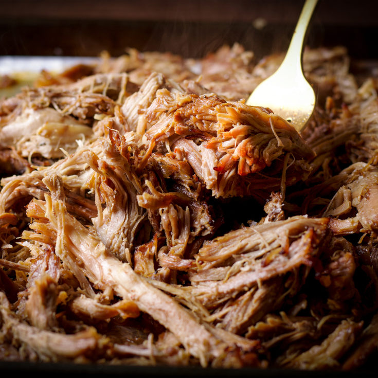

Carnitas

Equipment
For this recipe you will need a fairly well equipped kitchen, including the following:
- Sous vide machine and bath
- Spice grinder
- Decent broiler or extremely hot oven or grill
- Vacuum sealer and bags
- High temp sheet pans or skillets
Ingredients
- Carnitas rub:
- 100 G brown sugar
- 150 G kosher salt
- 30 G cumin
- 20 G corriander
- 1 pasilla chili
- 2 dried cayenne or birdseye chilis
- 4 cinnamon sticks
- 3 or 4 star anise
- 2 cloves
- 2 bay leaves
- 30 G black peppercorns
- 20 G smoked paprika
- 25 G granulated garlic
- 15 G oregano
- 2 limes
- 1 orange
- 1 medium onion
- 5 cloves garlic
- 1 medium to large boston butt or pork shoulder
- 1/4 cup of olive oil
Instructions
- Gather spices for the rub. This style of rub is not traditional in carnitas but acheives excellent flavor when made following this method.
- Toast the corriander, cumin, cinnamon, cloves, chilis and star anise until fragrent and sightly browned. Be careful not to let them burn. Cut the heat and add the bay leafs to the hot pan or sheetpan as it cools.
- Add the toasted spices with the black pepper to your spice grinder and grind until fine. Mix with the other spices, salt and brown sugar until uniform.
- Remove your pork butt from it's butcher paper or vacuum pack. Pat dry, than cover in a strong dusting of the rub until covered all over. Let rest while you prepare the other components for the sous vide.
- Quarter the limes and oranges, eighth your onion (or quarter two smaller onions). Toss the onion and garlic cloves in a quarter cup of olive oil.
- Place pork, citrus slices, onion pieces and garlic into your vacuum bag, even distributing the aromatics. Seal, and let rest for at least 6 and up to 24 hours
- Set sous vide bath to 165 degrees. Cook for 16 to 24 hours, than chill rapidly
- Heat your broiler to its most rippingly hot temperature. Remove your pork from the bag and pull, discarding aromatics and any bones if needed. Reserve all fat and gelatin.
- Portion pulled pork into a relatively thin layer on a sheetpan or high temp skillet. Add reserved liquid and fat, spreading evenly across all pans. Season with a little extra salt.
- Heat under the broiler for 5 to 10 minutes until the pork is browned, crispy and fragrent. It should have a notably crisp texture along the top layer, but don't allow it to burn.
- Eat immediately with your preferred taco loadout. I prefer salsa verde, fresh cilantro, queso fresco and raw white onion with carnitas. Or, transfer to a warming pan or chill to use in other recipes.